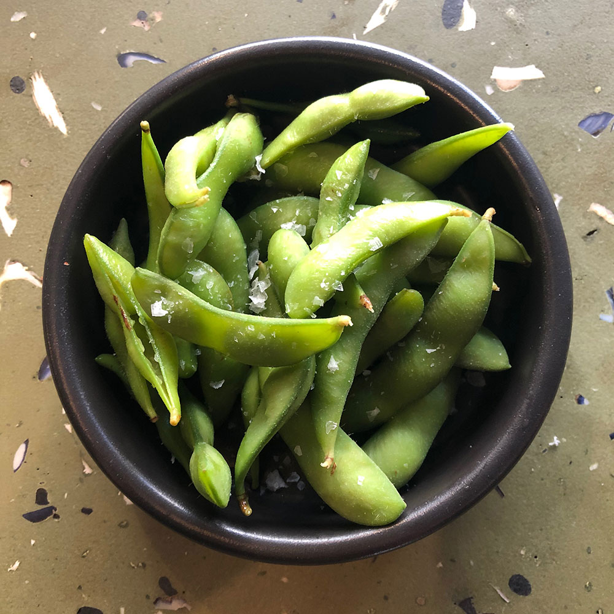

#18 - SALTED EDAMAME - 鹽水毛豆
Cooking nutritious yummy food cannot be easier than this. Edamame is young soybean. It is rich in protein, dietary fiber and micronutrients. This dish can be served as appetizer or snack.

INGREDIENTS:
- 400g fresh edamame 毛豆
- 2TBSP vegetable oil
- 2tsp salt
- Coarse sea salt
Directions:
- Wash edamame.
- Heat a pot of water until boil. Add vegetable oil and salt into the water.
- Put the edamame into the boiling water and boil for 4-5 minutes.
- Drain the edamame, and then put it in a bowl of ice water to stop cooking.
- When the edamame is completely cooled, drain and put it on a plate.
- Before serving, sprinkle some coarse sea salt and serve.
(Serves 1 person)
Note:
- The leftover cooked edamame can be shelled and freezed. The shelled bean can be added into salads and stir-fries.